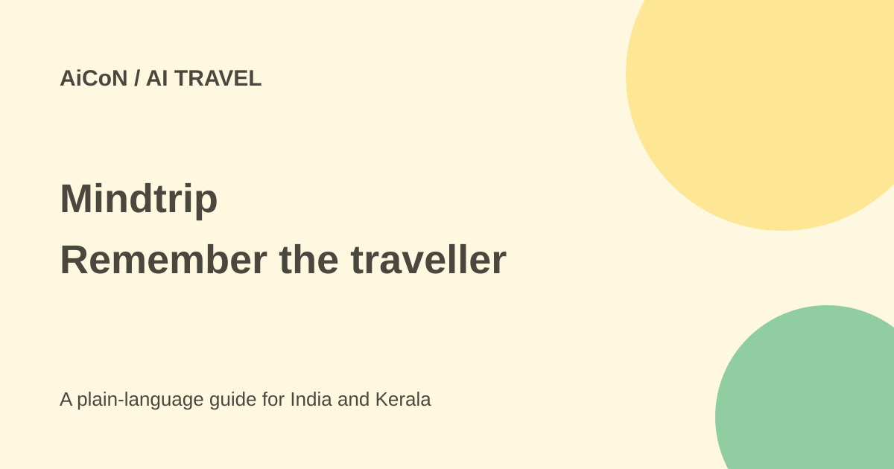

Mindtrip: travel preferences, AI agents and privacy
Mindtrip says its travel assistant remembers preferences between trips and can watch for useful changes. Free download does not establish free agent usage, and remembered preferences need their own privacy checks.

What does the personal assistant do?
Mindtrip's 30 September announcement describes an assistant built around the traveller rather than one isolated search. You can state preferences such as an aisle seat, a food-focused budget or a quieter neighbourhood. It uses that context with trip details to suggest options.
Preferences can change with circumstances. A family trip might need more room than a solo visit, or a nonstop flight may no longer be worth a high premium. The announcement says the assistant helps weigh these trade-offs, build itineraries, prepare destination briefings, suggest packing and organise reservations. Those are product claims, not a test of a specific itinerary.
Agents that work between searches
Users can activate agents to watch for a hotel price change, evaluate dates and destinations for flights, or find local restaurants and weekend ideas. The stated idea is to bring back updates when something relevant changes.
Watching does not guarantee the cheapest fare, complete hotel inventory or a timely alert. Check what is being monitored, its dates, destination, budget and notification settings. Treat an alert as a lead to verify, not an automatic reason to book.
Is Mindtrip free?
The official site calls the app free to download. The assistant's launch release does not publish separate agent pricing or a complete paid-plan schedule. It also does not establish every user's agent allowance or India-specific access. Read the terms shown in your account before enabling ongoing work.
Flights, accommodation and experiences remain real purchases. A free planning app does not include those costs. Confirm the final booking provider, dates, traveller details, total price and cancellation rules before paying. Keep booking receipts and provider confirmation separate from an AI itinerary.
How to try it carefully
- Read the official site, current account terms and privacy policy.
- Start with a non-sensitive preference, such as a quieter area or a budget range. Avoid passport, payment or medical details in casual chat.
- Give exact dates, departure point, traveller count and the currency for the budget.
- Ask for options and check important facts against hotel, airline or venue sources.
- If an agent is available, confirm its monitoring scope and notification controls before switching it on.
- Review saved preferences when the trip changes. A remembered preference may no longer fit.
- For a booking, check the final provider checkout rather than only the assistant's summary.
Memory and voice privacy
Mindtrip's policy says conversations and relevant history can be disclosed to its AI providers to generate responses. It says identifiable personal data is not used to train AI models and its providers are prohibited from using it for training. That does not mean the data is never processed externally.
For voice, the policy names OpenAI processing and says transcripts can remain as account conversation history. Provider Zero Data Retention does not delete copies retained by Mindtrip. Preferences may be saved separately in a profile, so deleting a conversation does not necessarily delete those preferences. Access, correction and deletion can be requested through the policy's contact route; backup copies may remain until their cycle ends.
Check community and sharing settings too. The policy describes profile, interests and itinerary information that may be shared according to your chosen settings. Do not assume every travel plan is private simply because it began in a chat.
For travellers in India
State whether a rupee budget includes transport, accommodation and food. For travel from Kerala, verify airport choice, connection time, baggage and entry requirements with the actual providers and official sources. A remembered aisle-seat preference does not prove seat availability or that the airline will include it for free.
For local suggestions, check opening times and accessibility directly. Do not rely on an unverified AI description for a tight connection or an essential facility.
What changed since the original post?
The original post described preferences, monitoring agents and a free download without agent pricing. This guide keeps those limits and adds the policy distinction between conversation deletion, profile memory and provider retention. The 18,000 beta-user and three-times trip-creation figures remain vendor-reported, not proof of better travel outcomes.
Frequently asked questions
Does deleting a chat erase every preference?
Not necessarily. The policy says profile preferences may be separate.
Does free download mean free bookings?
No. Travel purchases and any account-level charges are separate.
Was a trip or agent tested here?
No. This guide checks current public statements and privacy terms.
Sources: Official site · Assistant announcement · Privacy policy. Checked 7 October 2026.